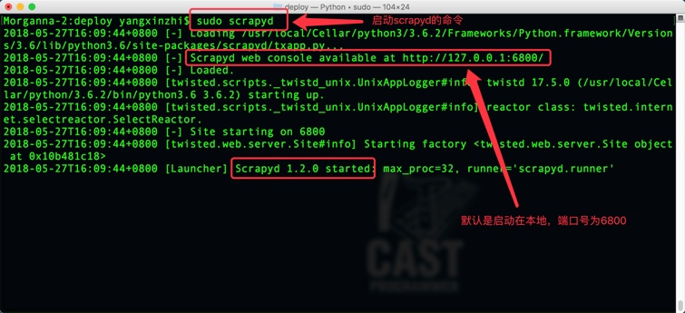
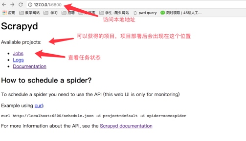
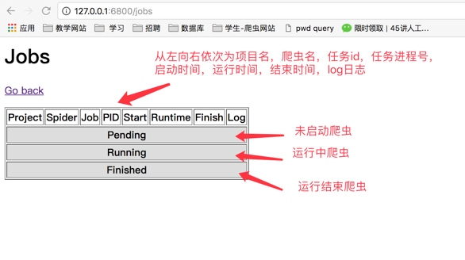
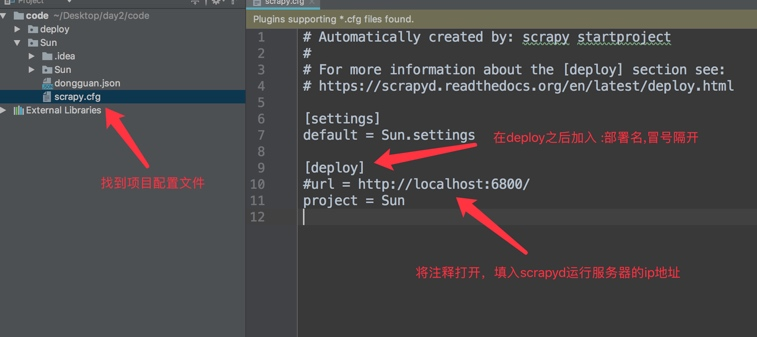
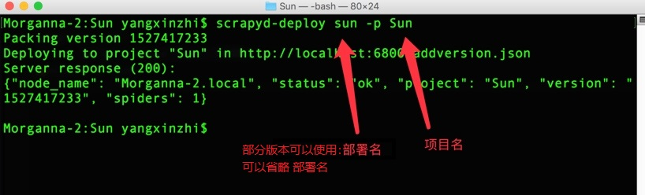
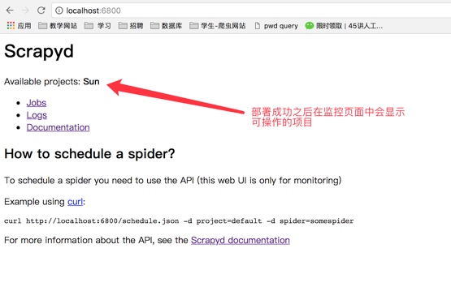
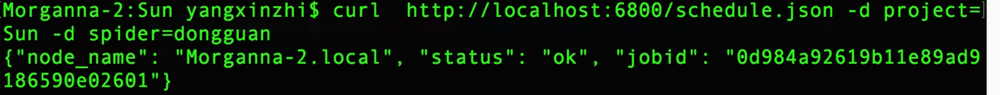

scrapyd部署scrapy项目
学习目标
- 了解 scrapyd的使用流程
1. scrapyd的介绍
scrapyd是一个用于部署和运行scrapy爬虫的程序，它允许你通过JSON API来部署爬虫项目和控制爬虫运行，scrapyd是一个守护进程，监听爬虫的运行和请求，然后启动进程来执行它们
所谓json api本质就是post请求的webapi
2. scrapyd的安装
scrapyd服务:
pip install scrapyd
scrapyd客户端:
pip install scrapyd-client
3. 启动scrapyd服务
在scrapy项目路径下 启动scrapyd的命令：
sudo scrapyd或scrapyd启动之后就可以打开本地运行的scrapyd，浏览器中访问本地6800端口可以查看scrapyd的监控界面
 
- 点击job可以查看任务监控界面

4. scrapy项目部署
4.1 配置需要部署的项目
编辑需要部署的项目的scrapy.cfg文件(需要将哪一个爬虫部署到scrapyd中，就配置该项目的该文件)
[deploy:部署名(部署名可以自行定义)]
url = http://localhost:6800/
project = 项目名(创建爬虫项目时使用的名称)

4.2 部署项目到scrapyd
同样在scrapy项目路径下执行：
scrapyd-deploy 部署名(配置文件中设置的名称) -p 项目名称

部署成功之后就可以看到部署的项目 
4.3 管理scrapy项目
- 启动项目：
curl http://localhost:6800/schedule.json -d project=project_name -d spider=spider_name

- 关闭爬虫：
curl http://localhost:6800/cancel.json -d project=project_name -d job=jobid
注意；curl是命令行工具，如果没有则需要额外安装
4.4 使用requests模块控制scrapy项目
import requests
# 启动爬虫
url = 'http://localhost:6800/schedule.json'
data = {
'project': 项目名,
'spider': 爬虫名,
}
resp = requests.post(url, data=data)
# 停止爬虫
url = 'http://localhost:6800/cancel.json'
data = {
'project': 项目名,
'job': 启动爬虫时返回的jobid,
}
resp = requests.post(url, data=data)
5. 了解scrapyd的其他webapi
- curl http://localhost:6800/listprojects.json （列出项目）
- curl http://localhost:6800/listspiders.json?project=myspider （列出爬虫）
- curl http://localhost:6800/listjobs.json?project=myspider （列出job）
- curl http://localhost:6800/cancel.json -d project=myspider -d job=tencent （终止爬虫，该功能会有延时或不能终止爬虫的情况，此时可用kill -9杀进程的方式中止）
- scrapyd还有其他webapi，百度搜索了解更多
小结
- 在scrapy项目路径下执行
sudo scrapyd或scrapyd，启动scrapyd服务；或以后台进程方式启动nohup scrapyd > scrapyd.log 2>&1 & - 部署scrapy爬虫项目
scrapyd-deploy -p myspider - 启动爬虫项目中的一个爬虫
curl http://localhost:6800/schedule.json -d project=myspider -d spider=tencent